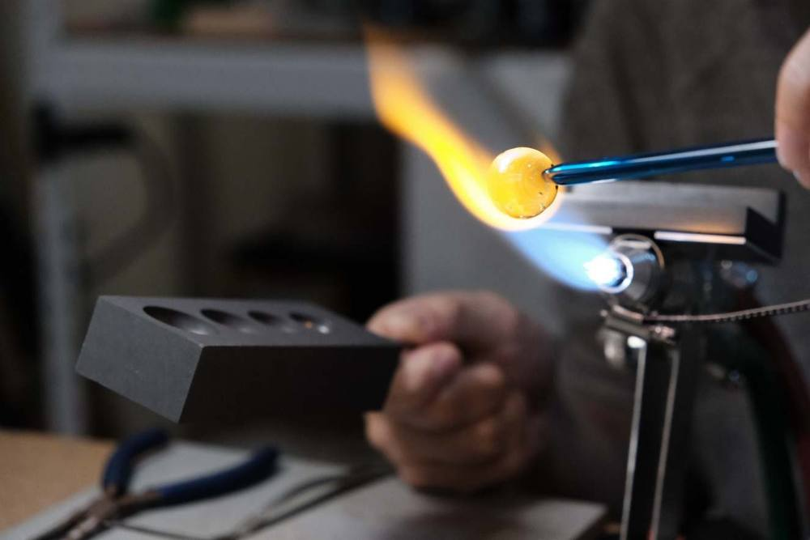

BESPOKE ・ 專屬訂製
Bespoke 訂製流程
送禮、情侶對飾或紀念，都可以專屬訂製。全程可以線上完成，也歡迎預約到台南或高雄工作室當面討論。

-
1
訂製選色
在網上或工作室自由選擇款式和顏色，或交由設計師為你配搭。確定後填寫訂購表單，並以官方 LINE 確認總額。 -
2
匯入全額製作費用
成功匯款後即安排製作。如要加入紀念元素，可由禮儀公司提供、郵寄，或預約到工作室交收。 -
3
準備紀念元素（如需要）
紀念訂製才需要：骨灰、毛髮、指甲、牙齒或舍利花等。份量見下方說明。送禮訂製可略過此步。 -
4
寄出紀念元素（如需要）
在夾鏈袋寫上聯絡人姓名、電話，放入信封寄到本工作室。 -
5
排隊製作
排隊進行手工製作，正常工時約 50 至 60 天（含例假日），如遇原料、訂單量等情況則順延。 -
6
接收作品
到工作室或郵寄接收，可代為禮盒包裝。如有剩餘的紀念元素會一併歸還。
MATERIALS
紀念元素怎麼準備
- 毛髮
- 裝一半至 4×6 公分夾鏈袋
- 骨灰
- 裝一半至 4×6 公分夾鏈袋，或約三份一布丁小湯匙已足夠
- 指甲、牙齒
- 指甲一片或牙齒一顆，我們會磨一部分粉末加入琉璃。不建議加入整顆牙齒、指甲
- 舍利花
- 可取代蛋白石星球系列中的蛋白石
- 其他素材
- 請先諮詢
COLOURS
26 種玻璃顏色
透明色系001 – 026
色帶為示意，正式網站將放上逐色色票與編號。不知道怎麼選？交給設計師為你配搭即可。
LEAD TIME
各系列製作時間
約 1.5 個月
金砂小宇宙系列
約 2 個月
串珠、金砂宇宙、紀念琉璃彩鑽系列
約 2.5 個月
蛋白石星球系列
BEFORE YOU ORDER
訂購注意事項
- 毛髮燒製後呈現為粉氣泡，並不會看見一根根毛髮。
- 經過火焰燒製，骨灰會隨機分布；若骨灰本身有微小孔隙，燒製後出現氣泡為正常物理現象。
- 每個琉璃按技術手法呈現的效果都不盡相同，具有隨機性，為獨一無二的紀念。
- 所有項目保留調整權利，依實際情況微調更換花紋樣式。
- 因手工燒製，琉璃尺寸會有 ±1 毫米誤差。